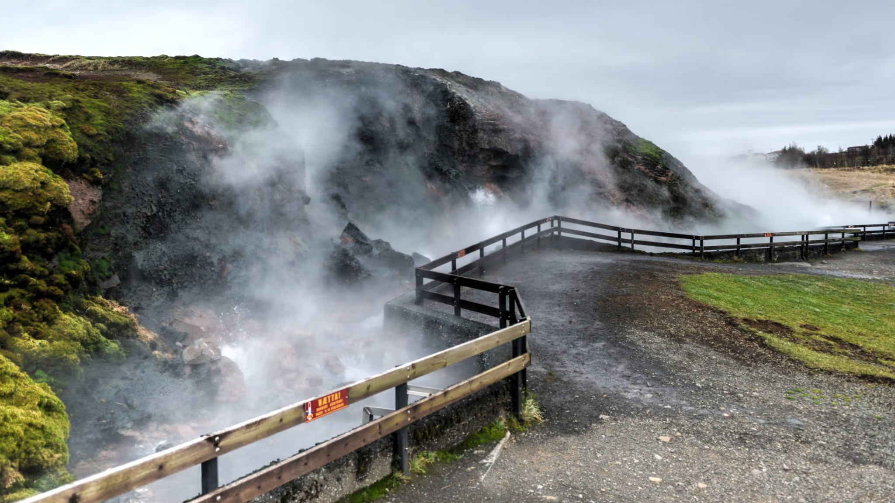
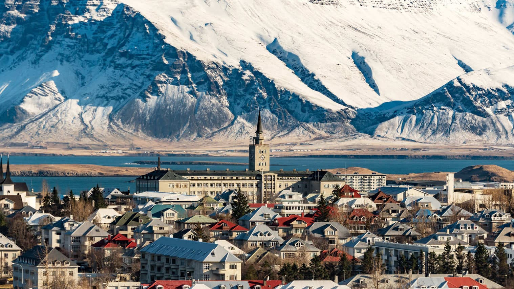
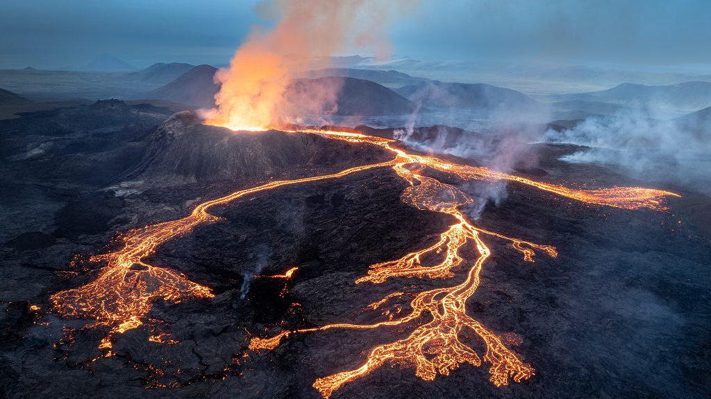

Islandia to miejsce zupłenie inne niż wszystko co widziałeś do tej pory na świecie. Aktywne wulkany nieustannie oświetlają wyspę i wstrząsają ziemię a rozległe pokrywy lodowe pokrywają piękną krainę przez cały rok. Wszędzie napotkać możemy niesamowite wodospady, laguny lodowcowe, bulgoczące gejzery i wiele innych nieprawdopodobnych miejsc. Islandia to marzenie każdego fotografa i miłośnika natury.

Najpotężniejsze gorące źródła w Europie wyrzucające setki litrów gorącej wody na sekundę. Gdy gorąca woda spotyka sie z gorącym powietrzem, powstają imponujące chmury zkłębionej pary. Źródło to tworzy doskonałe warunki dla przepięknych paproci, jest wykorzystywne również do ogrzewania pobliskich miejscowości i szklarni.
W urokliwym blasku białych, letnich nocy oraz pod sklepieniem zorzy polarnej w zimie można cieszyć się licznymi festiwalami oraz odkrywać atrakcje i miejsca o bogatej i ciekawej histori. Warto odwiedzić: Sun Voyager, Perla. Kościół Hallgrimskirja zajmuje pierwsze miejsce na liście najbardziej rozpoznawalnych budowli Islandi. W jego murach odbywją się również liczne koncerty i wystawy.


Jest to wulkan raczej wylewny niż erupcyjny, co oznacza, że jego lawa wypływa z ziemi, zamiast eksplodować popiołem, ogniem i skałami. Erupcje są dość powszechne na Islandi, jednak rzadko zdarzają się tak blisko stolicy i lotniska. Spektakularne strumienie lawy, ogniste fontanny i roztopione rzeki można podziwiać pod okiem lokalnego przewodnika.
Jest to czwarty pod względem wielkości lodowiec w kraju. Ta masa lodu o grubości siedmiuset metrów jest mocno osadzona na szczycie wulkanu polodowcowego Katla. Wulkan wybuchał już 20 razy. Lodowiec ten powinno zwiedzać się wyłącznie pod opieką wykwalifikowanego przewodnika.
Złoty Krąg to najpopularniejsza trasa widokowa na Islandii, 300-kilometrowa pętla prowadząca do trzech głównych atrakcji - Parku Narodowego Thingvellir, wodospadu Gullfoss i obszaru geotermalnego Geysir. Trasa znajduje się bardzo blisko Reykjaviku i możesz połączyć ją z ekscytującymi aktywnościami i wycieczkami, korzystając z największego na Islandii wyboru wycieczek wokół Złotego Kręgu.